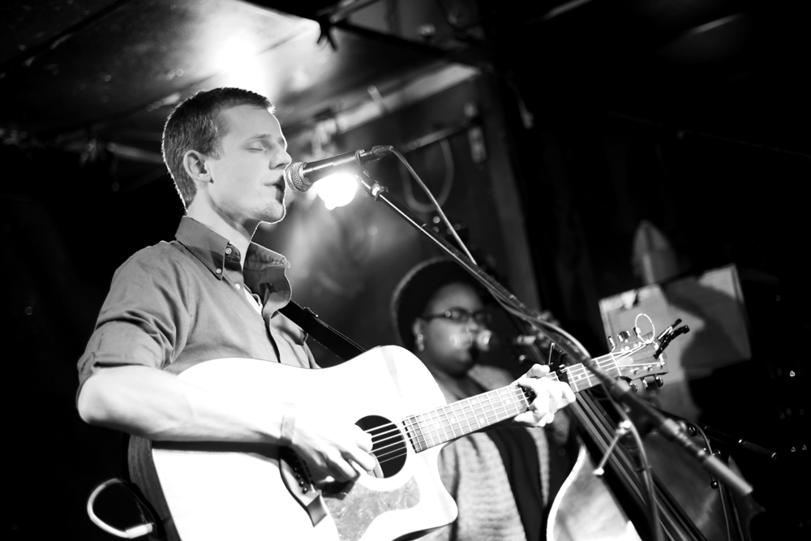

Here's a little sampling of our tunes:
One pensive troubadour, three classically trained bowed-string musicians and one dynamic percussionist come together as Doug Mains & the City Folk. This five-piece, with their roots planted in Michigan, bears a rich, smooth and unique sound refreshing to the progressive world of indie folk. With classical undertones, hints of old time folk as well as meaningful lyrics and “a voice that will reach into your soul”, Doug Mains & the City Folk are living up to what has been said about them; they are indeed “destined to be a Michigan icon of great Americana music.”
Doug
Guitar. Vocals. Songwriter.
Doug often states that his greatest downfall is the fact that he thinks too much and can't stop thinking. Yet where would we be as a band without his constant contemplation and questioning? [TWITTER]
Kim
Upright Bass. Vocals.
Kim remains the steady foundation of the band. Wether it be providing the musical building blocks for our tunes, or insisting we pull over to check the air pressure in the BAV's tires, we'd probably be somewhere in a ditch without her. [TWITTER]
Rob
Percussion.
It's easy to find someone that plays drums, but it's quite a rarity to find a true musician that has chosen percussion as the primary means of creating. We're so incredibly lucky to have Rob as our amazing percussionist [and deliverer of quick-witted and incredibly well-timed jokes.]
Josh
Cello. Accordion.
Josh might best be described as an elephant. He is incredibly helpful and always willing to encourage and aid others, yet the smallest thing will send him off in a fright. Seriously, step on a leaf and he'll freak out. [TWITTER]